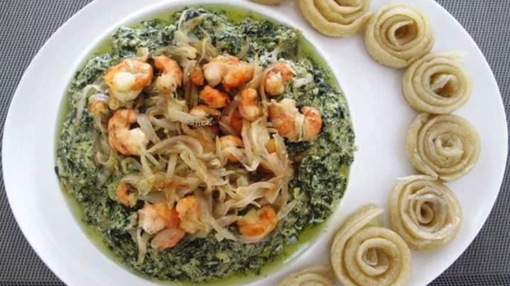
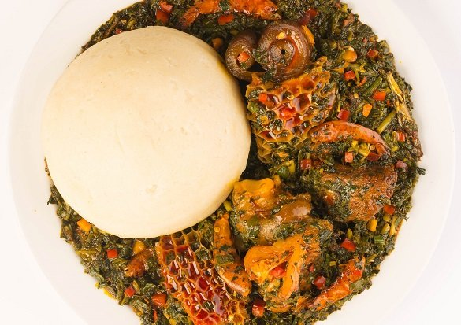
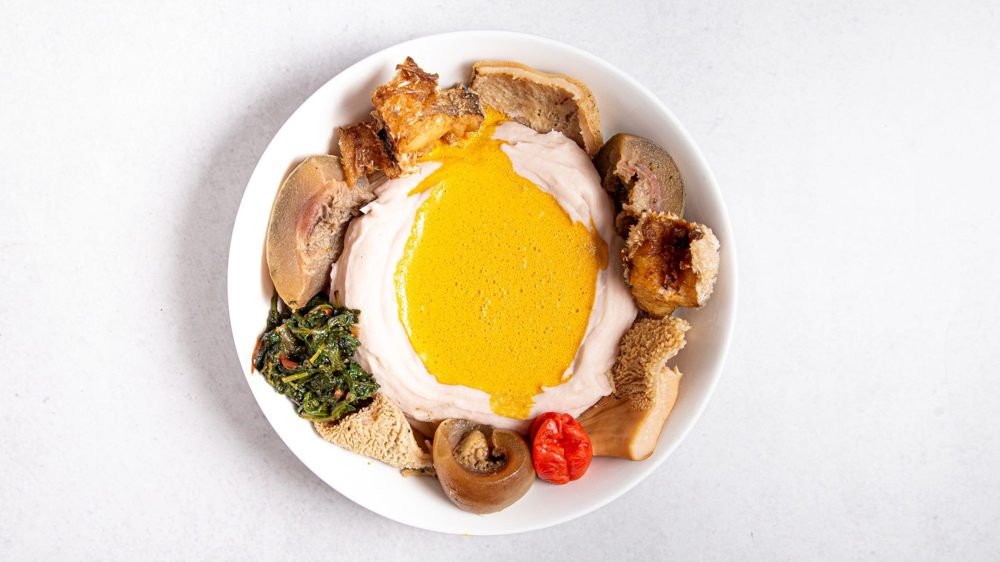
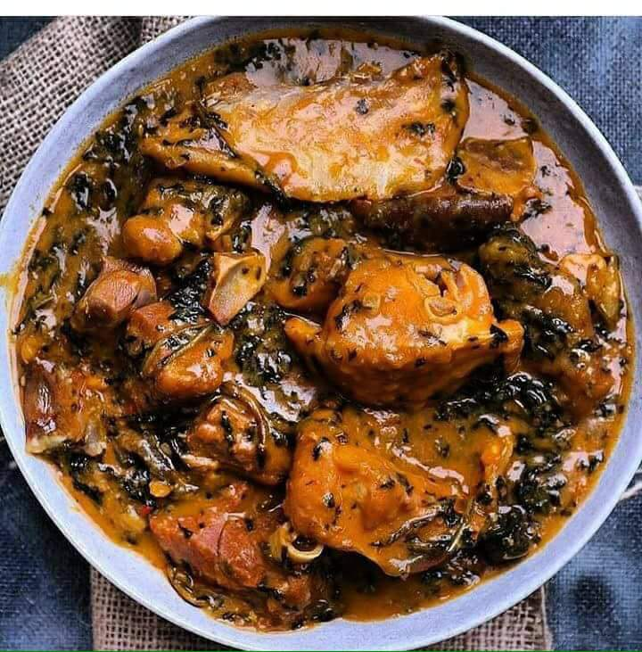

Ndole
3500 XAF
Ndole con Camarones
Ndole con Pollo
Ndole con Carne de Cebu
Ndole con Pescado Fresco
Guarnicion: Platano hervido(semi maduro o verde) o frito, Yuca, Arroz, Fufu

Eforiro
2500 XAF
Eforiro con Carne de Cebu y piel de Cebu
Eforiro con Pescado ahumado
Guarnicion : Fufu, Garri, platano hervido(semi maduro o verde)

Achu
6500 XAF
La sopa achu es una comida tradicional de Camerún, una sopa amarilla. Se prepara con ñame. Otros ingredientes son especias, agua, aceite de palma y "canwa o Nikki" (caliza) y pescado.

Bitter Leaf Soup
3000 XAF
Bitter leaf con Carne de Cebu
Bitter leaf con Gallina ahumada
Guarnicion : Platano hervido(semi maduro o verde), Malanga, Garri Y Fufu